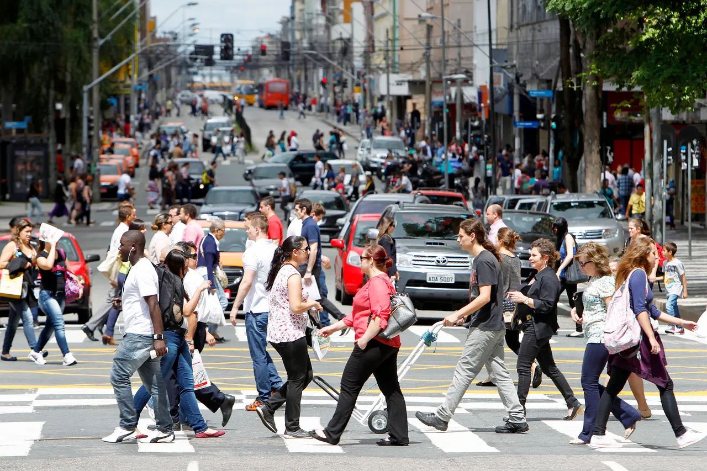
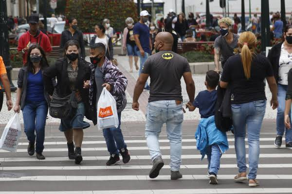
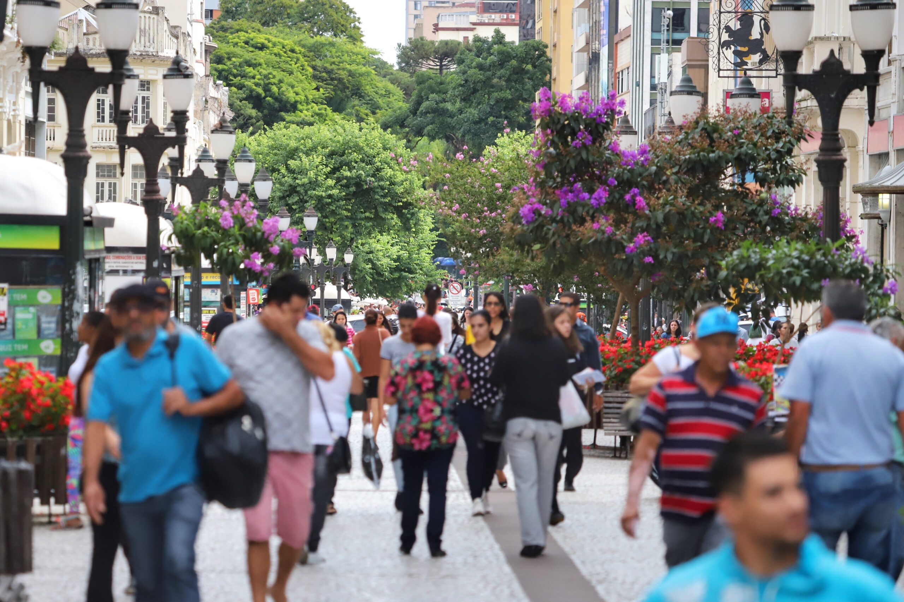

A população do Paraná é marcada por uma rica tapeçaria cultural, formada pela integração de povos indígenas, imigrantes europeus — como italianos, poloneses, alemães e ucranianos — e comunidades asiáticas e africanas. Essa miscigenação moldou os costumes, a gastronomia, a arquitetura e as festividades regionais, conferindo ao estado uma identidade cultural plural e singular no cenário nacional.

O perfil demográfico paranaense passou por grandes transformações nas últimas décadas, marcadas por um intenso processo de urbanização. A maior parte dos habitantes concentra-se em polos urbanos e regiões metropolitanas, com destaque para a Grande Curitiba e o eixo Londrina-Maringá, enquanto o interior mantém importante presença vinculada às atividades agropecuárias.

O Estado do Paraná vivencia uma desaceleração no seu ritmo de crescimento populacional, acompanhando uma tendência observada em todo o Brasil. O aumento da expectativa de vida aliado à queda na taxa de fecundidade tem resultado no envelhecimento progressivo da população, o que exige novos planejamentos públicos voltados à saúde, previdência e infraestrutura urbana.
